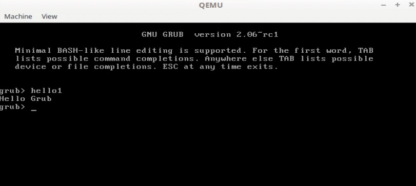

/* hello1.c - test module for dynamic loading */
/*
* GRUB -- GRand Unified Bootloader
* Copyright (C) 2003,2007 Free Software Foundation, Inc.
* Copyright (C) 2003 NIIBE Yutaka <gniibe@m17n.org>
*
* GRUB is free software: you can redistribute it and/or modify
* it under the terms of the GNU General Public License as published by
* the Free Software Foundation, either version 3 of the License, or
* (at your option) any later version.
*
* GRUB is distributed in the hope that it will be useful,
* but WITHOUT ANY WARRANTY; without even the implied warranty of
* MERCHANTABILITY or FITNESS FOR A PARTICULAR PURPOSE. See the
* GNU General Public License for more details.
*
* You should have received a copy of the GNU General Public License
* along with GRUB. If not, see <http://www.gnu.org/licenses/>.
*/
#include <grub/types.h>
#include <grub/misc.h>
#include <grub/mm.h>
#include <grub/err.h>
#include <grub/dl.h>
#include <grub/extcmd.h>
#include <grub/i18n.h>
GRUB_MOD_LICENSE ("GPLv3+");
static grub_err_t
grub_cmd_hello (grub_extcmd_context_t ctxt __attribute__ ((unused)),
int argc __attribute__ ((unused)),
char **args __attribute__ ((unused)))
{
grub_printf ("%s\n", _("Hello Grub"));
return 0;
}
static grub_extcmd_t cmd;
GRUB_MOD_INIT(hello1)
{
cmd = grub_register_extcmd ("hello1", grub_cmd_hello, 0, 0,
N_("Say `Hello Grub'."), 0);
}
GRUB_MOD_FINI(hello1)
{
grub_unregister_extcmd (cmd);
}这个章节我们将学习如何编写一个grub模块，Grub提供了强大的扩展功能，在Grub配置文件中的命令就是通过GRUB的模块实现的，所以完全可以编写字节的Grub模块，在这个章节不会详细的介绍Grub模块，我们通过编写一个简单的模块来了解Grub模块，在Grub的代码中有一个Hello World模块，这里我们参考这个模块打印一个 Hello Grub 的模块。
编写GRUB模块
首先，我们编写一个grub的代码
这里我们基本直接拷贝了Hello命令的源码，我们将这个源文件保存在Grub源代码 grub-core/hello1/ 目录中，命名为 hello1.c 。这段代码使用Grub提供的辅助函数进行注册
GRUB_MOD_INIT(name)
GRUB_MOD_FINI(name)GRUB_MOD_INIT(name) 是初始化函数，Grub启动的时候会调用这个函数，而真正注册命令的是 grub_register_extcmd 函数。 GRUB_MOD_FINI(name) 是销毁函数，Grub清理的时候会调用这个函数。来看看 grub_register_extcmd 函数的原型
grub_extcmd_t
grub_register_extcmd (const char *name, grub_extcmd_func_t func,
grub_command_flags_t flags, const char *summary,
const char *description,
const struct grub_arg_option *parser)这里不会详细的介绍每个参数的含义，我们主要介绍这里使用的参数：
-
name：函数的名称
-
func：真正用于执行的函数指针
-
description：描述信息
所以这里我们定义个一个名为 hello1 的命令，对应执行的函数为 grub_cmd_hello ，其他的就大致和编写C语言函数，需要注意的是我们需要使用Grub提供的标志函数，不能调用libc提供的函数。这是因为Grub运行的时候libc还没有加载。
定义好源代码，下面就开始编译，Grub提供了简化的编译方案，我们这里定义了 hello1.module 模块，只需要修改 grub-core/Makefile.core.def 文件即可，在文件末尾增加以下内容
module = {
name = hello1;
common = hello1/hello1.c;
};
配置的含义显而易见，这里就不再赘述。然后我们执行命令进行编译
$ cd $grub_source
$ ./bootstrap
$ ./autogen.sh
$ ./configure --prefix=$WORKSPACE/grub HOST_CFLAGS='-g'编译好后，这里我们使用《Grub2那些事 - 制作一个使用BIOS的系统》中的磁盘，将Grub安装到磁盘中
$ sudo $WORKSPACE/grubsbin/grub-install --boot-directory=$MOUNT/boot --modules="part_msdos hello1" $LOOPDEV然后运行qemu，进入Grub shell，执行hello1，将看到打印的 Hello Grub

使用Grub模块机制，我们可以提供更加强大的引导功能，Grub本身也提供了丰富的各种模块。Grub也像Linux提供了动态加载模块的 insmod 命令，它也是通过模块实现的。Grub的材料也非常多，也无法把所有的模块都介绍一遍，对于我们而言，我们只要知道如何编写一个新的模块以及在Linux系统引导时候Grub如何引导的就行了，下面我们将详细的介绍用于引导Linux命令的 linux 模块。